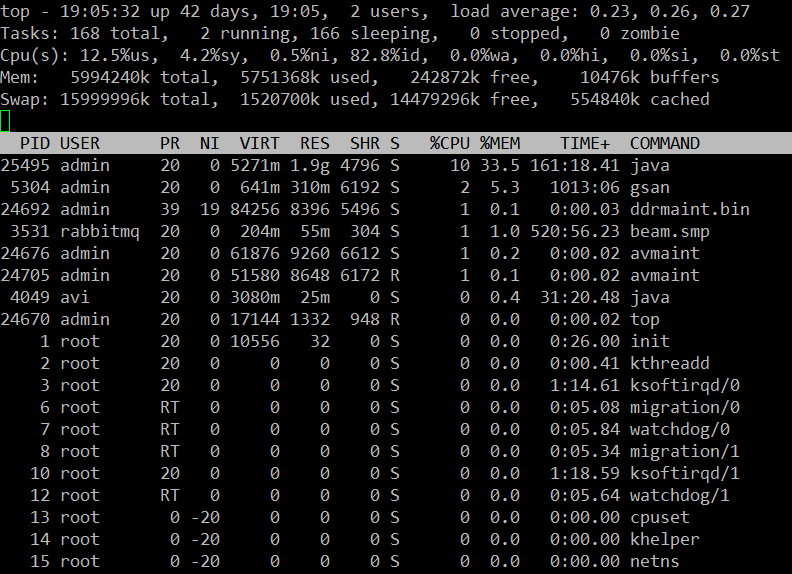

Linux常用命令对服务问题的排查和定位有很大帮助, 这里整理总结一下工作中常用的命令
awk
下面的例子主要来自于阮一峰的博客。
Awk是一种便于使用且表达能力强的程序设计语言，可应用于各种计算和数据处理任务。它依次处理文件的每一行，并读取里面的每一个字段。对于日志、CSV 那样的每行格式相同的文本文件，awk可能是最方便的工具。
基本用法
awk 动作 文件名
1 | awk '{print $0}' demo.txt |
1 | echo 'this is a test' | awk '{print $0}' |
this is a test
上面代码中，print $0就是把标准输入this is a test，重新打印了一遍。
awk会根据空格和制表符，将每一行分成若干字段，依次用$1、$2、$3代表第一个字段、第二个字段、第三个字段等等。
1 | echo 'this is a test' | awk '{print $4}' |
test
创建一个demo.txt文件,下面是文件内容:
1 | root:x:0:0:root:/root:/usr/bin/zsh |
这个文件的字段分隔符是冒号（:），所以要用-F参数指定分隔符为冒号。然后，才能提取到它的第一个字段。
1 | awk -F ':' '{ print $1 }' demo.txt |
1 | root |
变量
除了$ +数字表示某个字段，awk还提供其他一些变量。
变量NF表示当前行有多少个字段，因此$NF就代表最后一个字段。
1 | echo 'this is a test' | awk '{print $NF}' |
test
$(NF-1)代表倒数第二个字段。print命令里面的逗号，表示输出的时候，两个部分之间使用空格分隔。
1 | awk -F ':' '{print $1, $(NF-1)}' demo.txt |
1 | root /root |
变量NR表示当前处理的是第几行, print命令里面，如果原样输出字符，要放在双引号里面。
1 | awk -F ':' '{print NR ") " $1}' demo.txt |
1 | 1) root |
awk常用内置变量如下:
- NF: 当前行有多少个字段
- NR: 当前处理的是第几行
- FILENAME: 当前文件名
- FS: 字段分隔符，默认是空格和制表符。
- RS: 行分隔符，用于分割每一行，默认是换行符。
- OFS: 输出字段的分隔符，用于打印时分隔字段，默认为空格。
- ORS: 输出记录的分隔符，用于打印时分隔记录，默认为换行符。
- OFMT: 数字输出的格式，默认为％.6g
函数
awk还提供了一些内置函数，方便对原始数据的处理。
函数toupper()用于将字符转为大写。
1 | awk -F ':' '{ print toupper($1) }' demo.txt |
1 | ROOT |
其他常用函数如下:
- toupper(): 字符转为大写。
- tolower(): 字符转为小写。
- length(): 返回字符串长度。
- substr(): 返回子字符串。
- sin(): 正弦。
- cos(): 余弦。
- sqrt(): 平方根。
- rand(): 随机数。
条件
awk允许指定输出条件，只输出符合条件的行。
awk ‘条件 动作’ 文件名
下面的代码print命令前面是一个正则表达式，只输出包含usr的行
1 | awk -F ':' '/usr/ {print $1}' demo.txt |
1 | root |
下面的例子只输出奇数行，
1 | awk -F ':' 'NR % 2 == 1 {print $1}' demo.txt |
1 | root |
下面的例子只输出第三行以后的行。
1 | awk -F ':' 'NR >3 {print $1}' demo.txt |
1 | sys |
下面的例子输出第一个字段等于指定值的行。
1 | awk -F ':' '$1 == "root" || $1 == "bin" {print $1}' demo.txt |
1 | root |
if 语句
awk提供了if结构，用于编写复杂的条件。
下面的代码输出第一个字段的第一个字符大于m的行。
1 | awk -F ':' '{if ($1 > "m") print $1}' demo.txt |
1 | root |
if结构还可以指定else部分。
1 | awk -F ':' '{if ($1 > "m") print $1; else print "---"}' demo.txt |
1 | root |
top
top命令经常用来监控Linux的系统状况，比如cpu、内存的使用，程序员基本都知道这个命令，但比较奇怪的是能用好它的人却很少，例如top监控视图中内存数值的含义就有不少的曲解。
本文通过一个运行中的WEB服务器的top监控截图，讲述top视图中的各种数据的含义，还包括视图中各进程（任务）的字段的排序。

TOP基本视图数据含义
第一行：
- 19:05:32 : 当前系统时间
- 42 days, 19:05: : 系统已经运行了42天19小时05分钟（在这期间没 重启过）
- 2 users : 当前有2个用户登录系统
- load average: 0.23, 0.26. 0.27 : load average后面的三个数 别是1分钟、5分钟、15分钟的负载情况
load average数据是每隔5秒钟检查一次活跃的进程数，然后按特定算法计算出的数值。如果这个数除以逻辑CPU的数量，结果高于5的时候就表明系统在超负荷运转了。
第二行：进程
- 168 total : 系统现在共有168个进程
- 2 running : 其中处于运行中的有2个
- 166 sleeping : 166个在休眠
- 0 stopped : stoped状态的有0个
- 0 zombie : 僵尸状态的有0个
第三行：cpu状态
- 12.5% us : 用户空间占用CPU的百分比。
- 4.2% sy : 内核空间占用CPU的百分比。
- 0.5% ni : 改变过优先级的进程占用CPU的百分比
- 82.8% id : 空闲CPU百分比
- 0.0% wa : IO等待占用CPU的百分比
- 0.0% hi : 硬中断（Hardware IRQ）占用CPU的百分比
- 0.0% si : 软中断（Software Interrupts）占用CPU的百分比
在这里CPU的使用比率和windows概念不同，如果你不理解用户空间和内核空间，需要了解一下。
第四行：内存状态
- 5994240k total : 物理内存总量
- 5751368k used : 使用中的内存总量
- 242872k free : 空闲内存总量
- 10476k buffers : 缓存的内存量
这里要说明的是不能用windows的内存概念理解这些数据，如果按windows的方式此台服务器“危矣”：8G的内存总量只剩下530M的可用内存。Linux的内存管理有其特殊性，复杂点需要一本书来说明，这里只是简单说点和我们传统概念（windows）的不同。
第四行中使用中的内存总量（used）指的是现在系统内核控制的内存数，空闲内存总量（free）是内核还未纳入其管控范围的数量。纳入内核管理的内存不见得都在使用中，还包括过去使用过的现在可以被重复利用的内存，内核并不把这些可被重新使用的内存交还到free中去，因此在linux上free内存会越来越少，但不用为此担心。
第五行：swap交换分区
- 15999996k total : 交换区总量
- 1520700k used: 使用的交换区总量
- 14479296k free: 空闲交换区总量
- 554840k cached: 缓冲的交换区总量
如果出于习惯去计算可用内存数，这里有个近似的计算公式：第四行的free + 第四行的buffers + 第五行的cached，按这个公式此台服务器的可用内存： 242872+10476+554840 = 808,188kb = 789MB。
对于内存监控，在top里我们要时刻监控第五行swap交换分区的used，如果这个数值在不断的变化，说明内核在不断进行内存和swap的数据交换，这是真正的内存不够用了。
第六行:空行
- 第七行以下：各进程（任务）的状态监控
- PID : 进程id
- USER : 进程所有者
- PR : 进程优先级
- NI : nice值。负值表示高优先级，正值表示低优先级
- VIRT : 进程使用的虚拟内存总量，单位kb。VIRT=SWAP+RES
- RES : 进程使用的、未被换出的物理内存大小，单位kb。RES=CODE+DATA
- SHR : 共享内存大小，单位kb
- S : 进程状态。D=不可中断的睡眠状态 R=运行 S=睡眠 T=跟踪/停止 Z=僵尸进程
- %CPU : 上次更新到现在的CPU时间占用百分比
- %MEM : 进程使用的物理内存百分比
- TIME+ : 进程使用的CPU时间总计，单位1/100秒
- COMMAND : 进程名称（命令名/命令行）
多核CPU监控
在top基本视图中，按键盘数字1，可监控每个逻辑CPU的状况
top列排序
top默认的排序列是 %CPU, 通过shift + >或shift + <可以向右或左改变排序列
设置信息更新时间
top -d 3
表示更新周期为3秒
显示指定的进程信息
top -p 139
显示进程号为139的进程信息，CPU、内存占用率等
显示更新指定次后退出
top -n 10
更新十次后退出
grep
grep 命令用于查找文件里符合条件的字符串。工作中我常用来过滤日志中的一些关键信息.
过滤出所有日志中的异常信息行, 取结果前20条开看看, -B1指取匹配到的前一行, -i忽略大小写
1 | grep -i "Exception" mcserver.log.* -B1 | head -n 20 |
下面这个-c可以统计每个文件里面匹配到的个数, 列出所有文件, 可以用来缩小文件范围
1 | grep -i "Exception" mcserver.log.* -c |
-v表示显示不包含匹配文本的所有行, {1..3}表示取1到3
1 | grep -v "Exception" mcserver.log.{1..3} -c |
1 | mcserver.log.1:102398 |
sed
sed 命令是利用脚本来处理文本文件。sed 可依照脚本的指令来处理、编辑文本文件。主要用来自动编辑一个或多个文件、简化对文件的反复操作、编写转换程序等。
下面是test.txt的内容
1 | root:x:0:0:root:/root:/bin/bash |
以行为单位的新增/删除，将文件的2-3行删除
1 | sed -i '2,3d' test.txt |
数据的搜寻并替换，将root替换为admin
1 | sed -i 's/root/admin/g' test.txt |
在第二行添加"ignore_vc_cert"=false
1 | sed -i '2a "ignore_vc_cert"=false' test.txt |
匹配到包含"ignore_vc_cert"的那一行，然后将false替换为true
1 | sed -i '/"ignore_vc_cert"/ s/false/true/' test.txt |
以后再更新，目前工作中常用的就这些